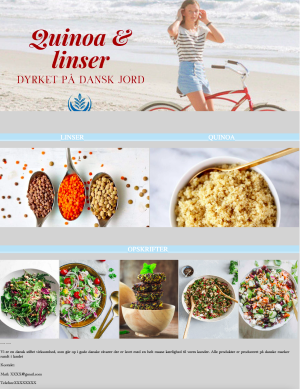

Dette projekt var det allerførste på uddannelsen, hvor opgaven lød på at lave et moodboard og en kodet hjemmeside ud fra vores udleverede emne, som var "Quinoa & linser dyrket på dansk jord"
Vi startede med at lave en brainstorm, hvor vi kom på alle de ting vi tænkte på da man hørte ordende : Quinoa, linser, dansk.
Sommer, landbrug og sundhed var bl.a nogle af de tanker vi fik.
Vi endte med at komme op med dette moodboard ud fra vores analyse:
Vores kodede hjemmeside endte med at blive til en side med en masse opskrifter til forskellige retter og salater med quinoa og linser. Vi brugte de samme farver som vi brugte i vores moodboard for at få det til at passe sammen
Den endelige hjemmeside:
